pfSense is an open-source firewall and router built on FreeBSD — routing, firewalling, VPN, DHCP and DNS in one box. In this post I install pfSense Community Edition as a VM in VMware Workstation and use it to route between two lab networks, 192.168.10.0/24 and 192.168.20.0/24, with the home network as WAN.
| pfSense interface | NIC | VMware network | Address |
|---|---|---|---|
| WAN | em0 | VMnet0 (bridged to the home network) | 192.168.1.9/24, gateway 192.168.1.1 |
| LAN10 | em1 | VMnet1 (host-only) | 192.168.10.1/24 |
| LAN20 | em2 | VMnet2 (host-only) | 192.168.20.1/24 |
Choose the AMD64 architecture, the ISO installer and the nearest mirror. The download is gzip-compressed — extract the .iso before attaching it to the VM.
Open Edit → Virtual Network Editor and add two host-only networks: VMnet1 on 192.168.10.0/24 and VMnet2 on 192.168.20.0/24. Untick Use local DHCP service on both — pfSense will be the router, and VMware's DHCP would hand out addresses without pfSense as the gateway.
Windows gets a virtual adapter for each host-only network. In Network Connections, rename them (VLAN-10, VLAN-20) and give each a static address in its network, with pfSense as the gateway:
| Host adapter | IP address | Gateway |
|---|---|---|
| VLAN-10 (VMnet1) | 192.168.10.100/24 | 192.168.10.1 |
| VLAN-20 (VMnet2) | 192.168.20.100/24 | 192.168.20.1 |
Create a FreeBSD 64-bit VM with the ISO attached, then give it three network adapters: VMnet0 (WAN), VMnet1 and VMnet2:
Power on the VM and accept the defaults: Install, default keymap, Auto (ZFS), stripe on the single disk, confirm, and reboot when it finishes.
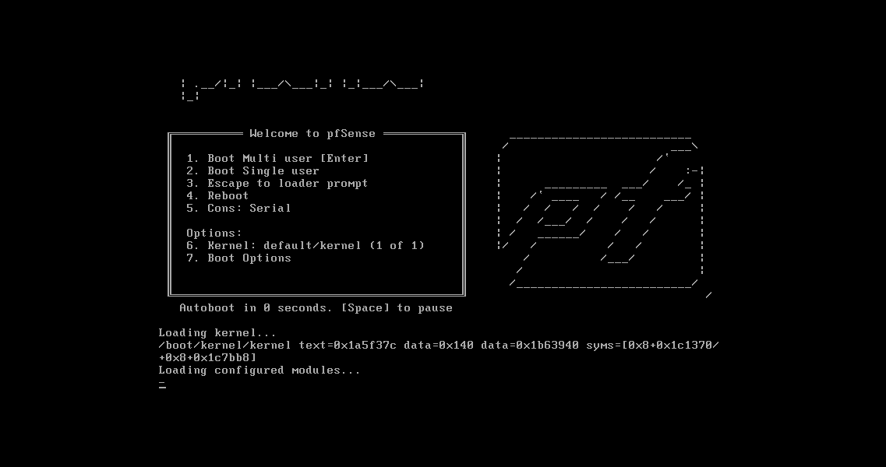
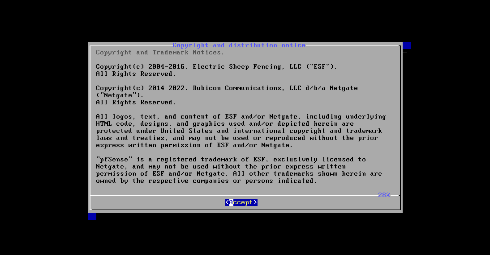
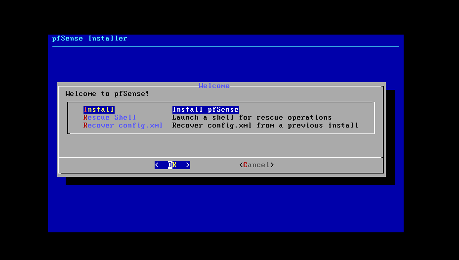
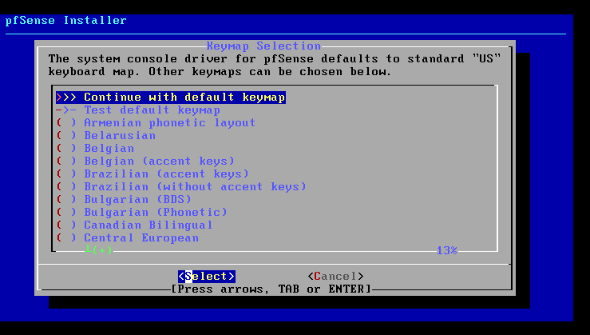
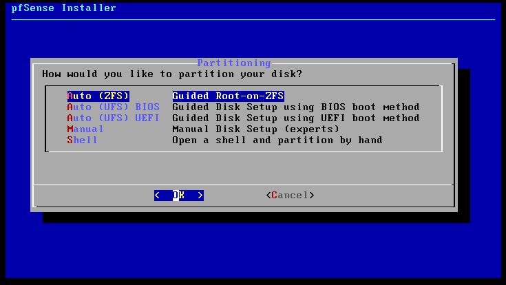
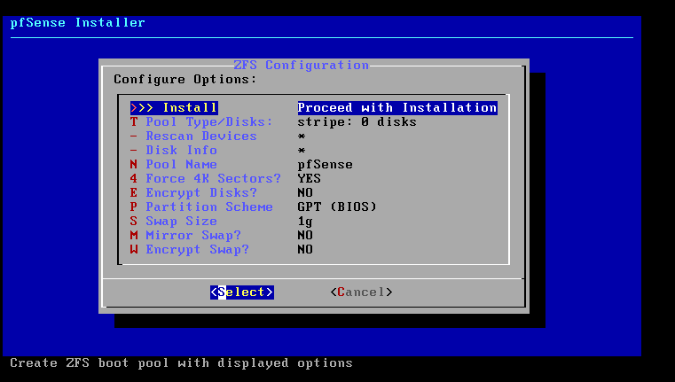
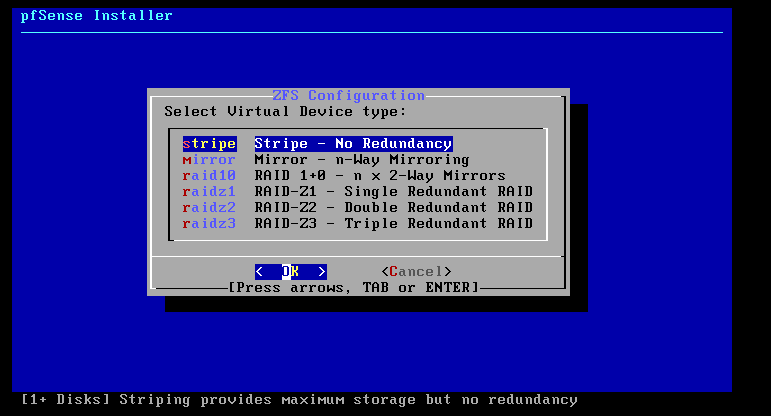
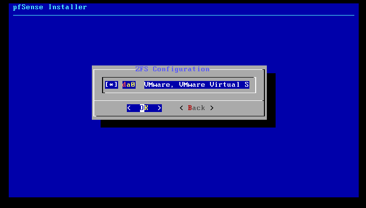
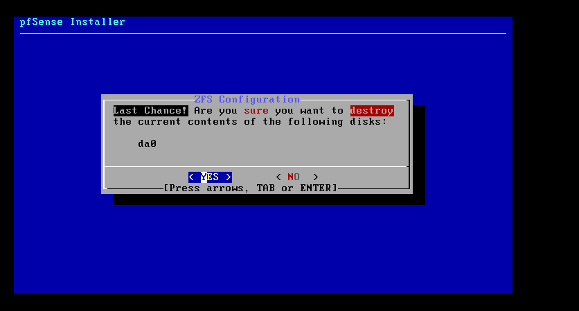
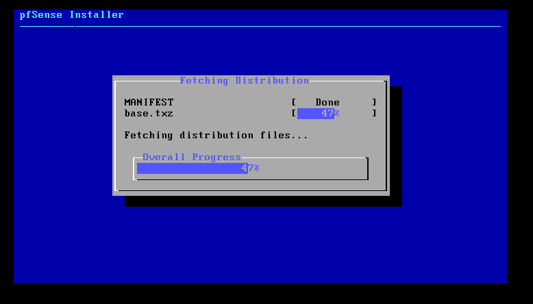
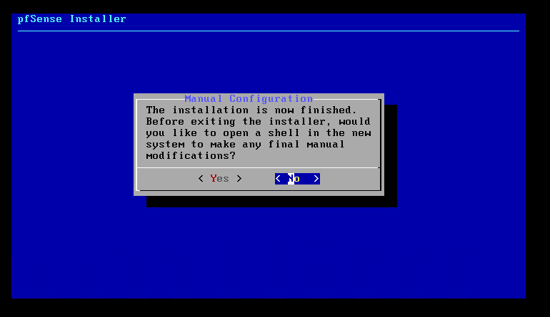
After the reboot, the console shows the interface assignments and a menu. pfSense picked up a DHCP address on WAN, and LAN defaults to 192.168.1.1 — the same network as my home LAN. Choose option 2 and set LAN (em1) to 192.168.10.1/24, with no DHCP server and HTTP for the web interface:
From the host, browse to http://192.168.10.1 and sign in with the default credentials admin / pfsense. The setup wizard starts:
| Wizard step | My setting |
|---|---|
| General information | Hostname pfSense, domain snvcloud.ind, DNS 192.168.1.8 and 8.8.8.8 |
| Time server | 2.pfsense.pool.ntp.org, Asia/Kolkata |
| WAN interface | Static 192.168.1.9/24, gateway 192.168.1.1 |
| LAN interface | 192.168.10.1/24 |
| Admin password | Change it from the default |
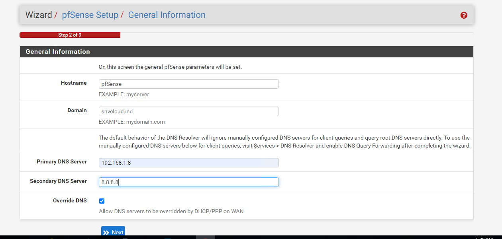
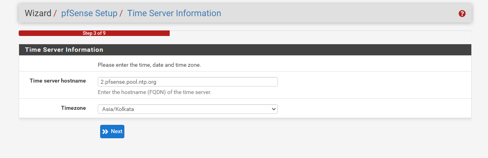
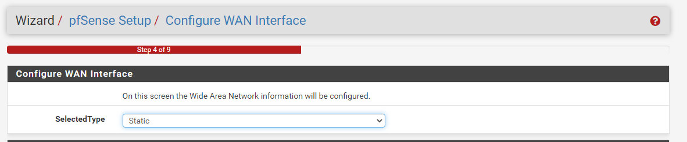
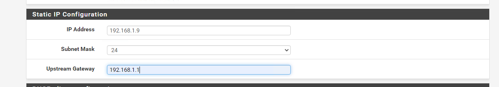
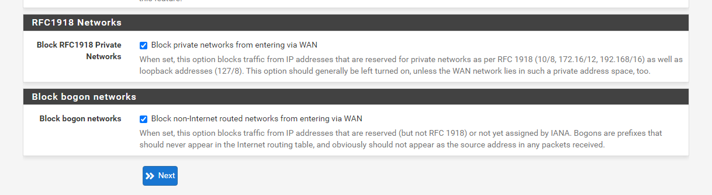
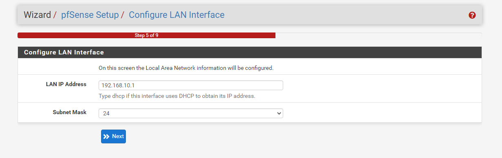
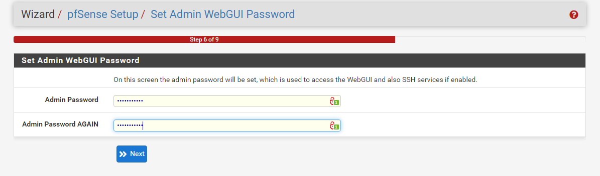
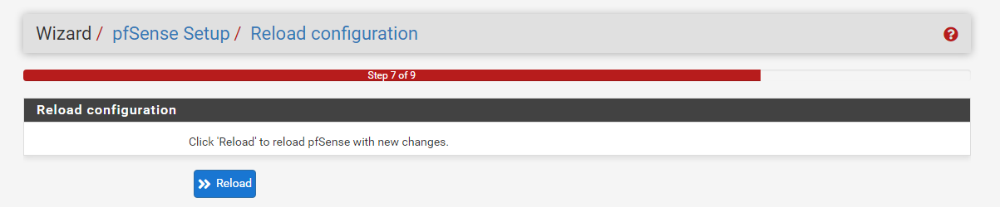
The dashboard shows WAN and LAN up. Go to Interfaces → Assignments:
Rename LAN to LAN10, then Add em2 (it appears as OPT1), enable it, rename it LAN20 and give it the static address 192.168.20.1/24. Apply the changes after each one:
Go to Firewall → Rules. WAN blocks everything inbound by default, and LAN10 (the original LAN) comes with an allow-any rule. But a new interface like LAN20 has no rules, so everything from it is blocked:
On LAN20, click Add: action Pass, interface LAN20, IPv4, protocol any, source LAN20 net, destination any, description "Allow LAN 20". Save and Apply Changes:
From the host, both pfSense gateways answer:
Now put VMs on VMnet1 or VMnet2 with pfSense as their gateway — they can talk to each other through the firewall and reach the internet through WAN, and you can tighten the rules to control exactly what crosses between the networks.
Related: Host-only networks in VirtualBox from the command line